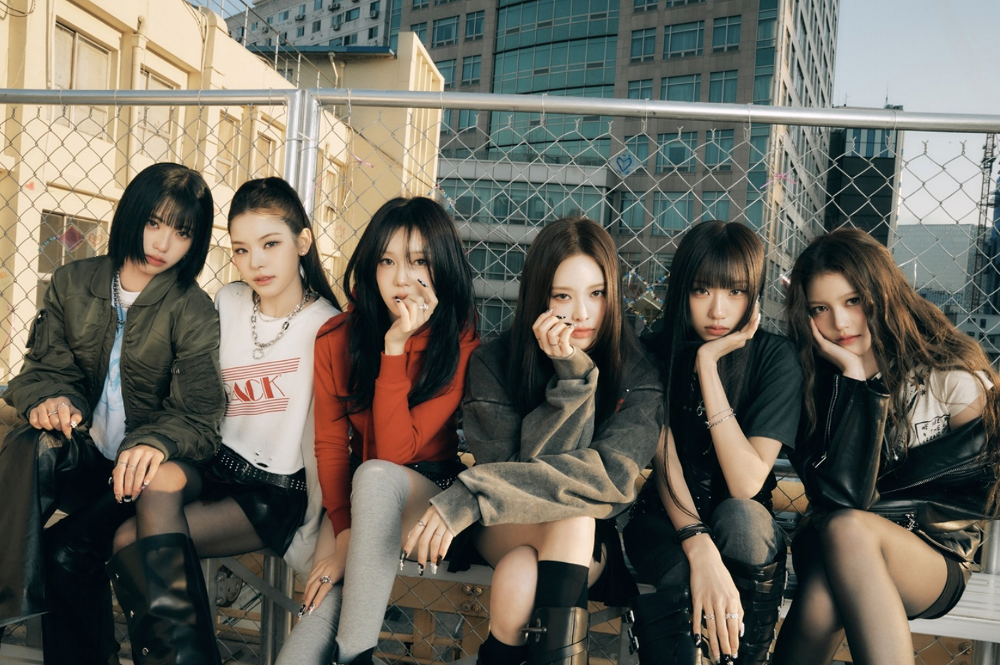
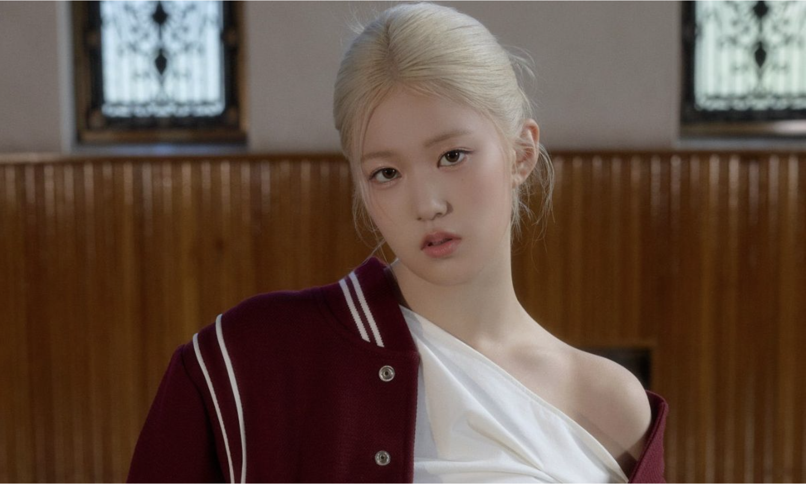

This page is devoted to the k-pop group izna, pictured below.
Izna is a six-member South Korean girl group formed by WakeOne Entertainment. They debuted on a survival show, where they competed against other trainees for their spot in the Korean pop group. The group previously included seven members, but vocalist Yoon Jiyoon left the group after an extended hiatus due to undisclosed health concerns.

Choi Jungeun experienced an underdog arc on the K-pop survival show, I-land 2, where she overcame numerous challenges to secure her place in the group. Despite performing at the same high level each week, she was often downvoted by Korean netizens due to her visuals and physical appearance. Many found her visuals incompatible with Korean beauty standards. However, in the finale, Jungeun received the most votes and debuted successfully.
See Choi Jungeun of izna perform a cover of HuntRIX's "Golden" at this TikTok .